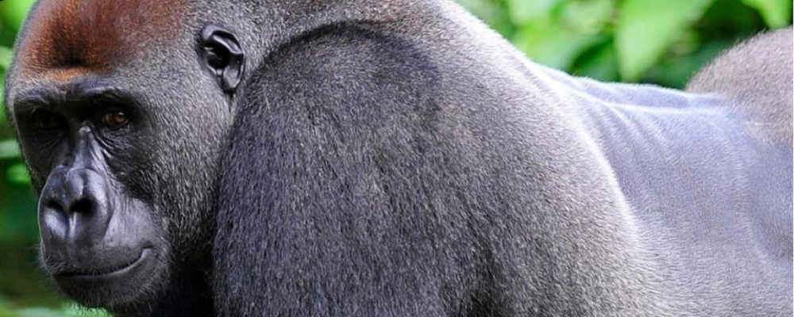

| Name: | Charles |  |
|---|---|---|
| Born: | 1972 | |
| Age: | 52 | |
| Email: | email Charles | |
| Position: | Crowned Oldest living Silver Back | |
| Skills | I, Charles, have proven to be an ideal example of what a silverback gorila represents. Siring over 10 offspring and being a grandfather to six gorilla offsprings, the last of whom is named “Charlie” in his father's honour. Arriving at a very young age, a tiny shy toddler, and growing to be a robust 195kg, a magnificent male who, even at slightly over 50 years of age, as always being vigilant about protecting his family and maintaining order in the troop. A consummate amazing father and grandfather to the only family known and dearly cared about. | |
Please understand that the ape did not write this webpage, thank you.
Born in 1972, I am a Western Lowland Gorilla that currently resides at the famous Toronto Zoo, in Toronto, Ontario, Canada. He was born in Gabon, West Africa where he spent the first year or so of his life. When he was around a year old, his family were attacked by poachers who wanted to kidnap the young gorillas for the lucrative zoo trade. As adult gorillas are extremely protective towards their young, poachers usually kill the adults before abducting their children. It is believed that Charles was found next to the corpse of his deceased mother before being kidnapped and taken to Canada. He was taken to the newly-opened Toronto Zoo on the 24th September 1974 and named Charles as zookeepers believed he looked similar to comic strip character Charlie Brown. When Charles was first brought to the zoo, he was considered rather unattractive as he was missing part of his hair and had lesions and sores that bespeckled his body.